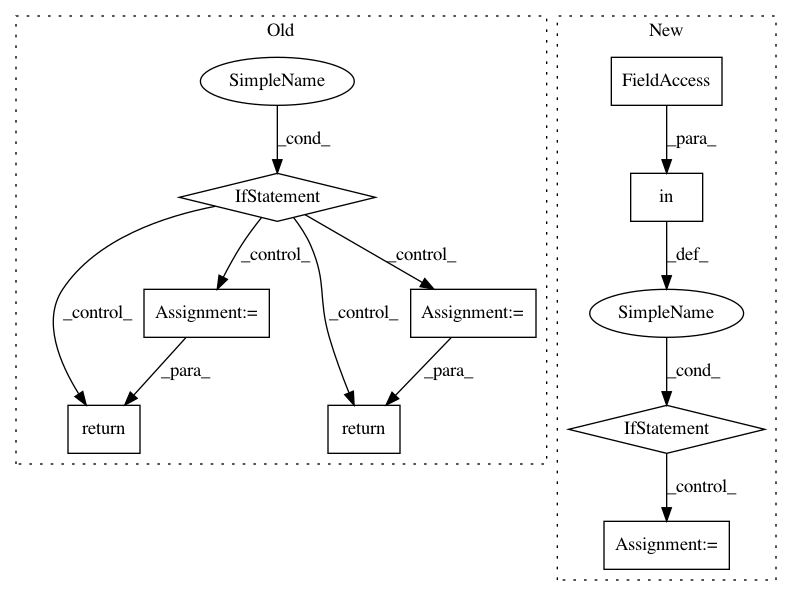

a2f318363a1c4dde386d7f7ac316baa706678b89,pyntcloud/pyntcloud.py,PyntCloud,get_sample,#PyntCloud#,333
Before Change
def get_sample(self, name, **kwargs):
Returns arbitrary number of points sampled by selected method
if name in S_POINTS:
kwargs["points"] = self.xyz
valid_args = crosscheck_kwargs_function(kwargs, S_POINTS[name])
return S_POINTS[name](**valid_args)
elif name in S_MESH:
kwargs["v1"], kwargs["v2"], kwargs["v3"] = self.get_mesh_vertices()
valid_args = crosscheck_kwargs_function(kwargs, S_MESH[name])
return S_MESH[name](**valid_args)
elif name in S_VOXELGRID:
kwargs["voxelgrid"] = self.voxelgrids[kwargs["voxelgrid"]]
valid_args = crosscheck_kwargs_function(kwargs, S_VOXELGRID[name])
return S_VOXELGRID[name](**valid_args)
else:
raise ValueError("Unsupported sample mode; supported modes are: {}".format(ALL_SAMPLING))
def get_neighbors(self, k=None, r=None, kdtree=None):
For each point finds the indices that compose it"s neighbourhood.
Parameters
After Change
Number of points to be sampled.
if name in ALL_SAMPLING:
S = ALL_SAMPLING[name](self, **kwargs)
S.extract_info()
return S.compute()
else:
raise ValueError("Unsupported sampling. Check docstring")
def get_neighbors(self, k=None, r=None, kdtree=None):
For each point finds the indices that compose it"s neighbourhood.
Parameters
In pattern: SUPERPATTERN
Frequency: 3
Non-data size: 9
Instances
Project Name: daavoo/pyntcloud
Commit Name: a2f318363a1c4dde386d7f7ac316baa706678b89
Time: 2017-03-09
Author: daviddelaiglesiacastro@gmail.com
File Name: pyntcloud/pyntcloud.py
Class Name: PyntCloud
Method Name: get_sample
Project Name: daavoo/pyntcloud
Commit Name: f9b3bc145e981a05dd27abc8f2987692bf4d3b5c
Time: 2017-03-09
Author: daviddelaiglesiacastro@gmail.com
File Name: pyntcloud/pyntcloud.py
Class Name: PyntCloud
Method Name: get_filter
Project Name: brian-team/brian2
Commit Name: 25ca9c249fd3e11bb166b42ffeb2433036964bd1
Time: 2017-07-05
Author: charleetje@gmail.com
File Name: brian2/codegen/generators/GSL_generator.py
Class Name: GSLWeaveCodeGenerator
Method Name: write_dataholder